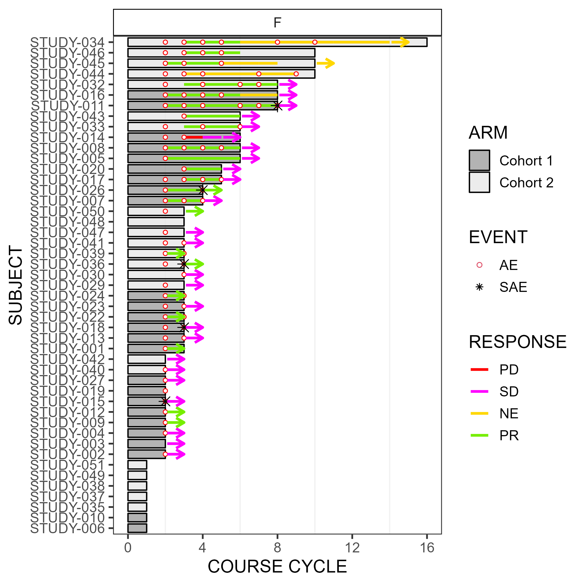
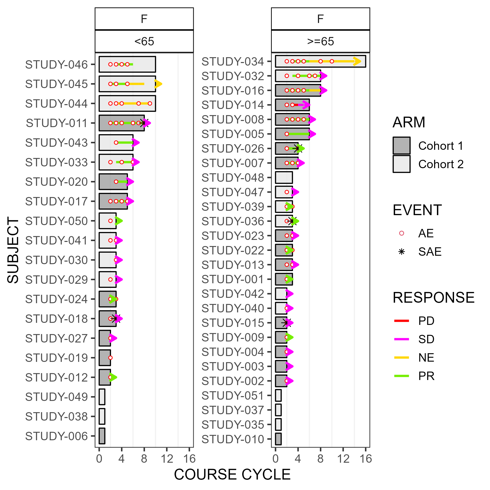

7 swimplot
Swimmer plots are used to show a patient’s response over time (i.e. days), or by treatment course cycle.
7.1 Installation
You can install the main version of swimplot from GitHub with:
# install.packages("devtools")
devtools::install_github("biostatsPMH/swimplot", ref="main")An alternative version of swimplot which allows for patterns in the bars (eg. stripes) can be installed from GitHub with:
# install.packages("devtools")
devtools::install_github("biostatsPMH/swimplot", ref="pattern")7.3 Examples
7.3.1 Swimmer plot that includes AE event status by course cycle
Uses addendum fake study data. The below swimmer plot stratifies by sex, but all participants are female.
The width, height and scale parameters in ggsave() can be modified to fit a large plot.
library(ggplot2);
library(swimplot);
data("arm", "res", "ae");
res$RESPONSE <- as.factor(res$RESPONSE);
levels(res$RESPONSE) <- c("PD", "SD", "NE", "PR", "CR");
p <- swimmer_plot(df=arm,id='SUBJECT',end='END_TRT',name_fill='ARM',id_order ='increasing',col="black",alpha=0.75,width=.8,base_size=14,stratify= c('SEX')) +
swimmer_lines(df_lines=res,id='SUBJECT',start='RESPONSE_START',end='RESPONSE_END',name_col='RESPONSE',size=1)+
swimmer_points(df_points=ae,id='SUBJECT',time='COURSE_NUM',name_shape='EVENT',name_col='EVENT',fill='white',size=c(1.25, 3)[as.factor(ae$EVENT)])+
swimmer_arrows(df_arrows=res,id='SUBJECT',arrow_start='RESPONSE_END',cont='CONTINUED_RESPONSE',name_col='RESPONSE',show.legend=FALSE,type="open",cex=1) +
scale_fill_manual(values=c('grey60', 'grey90'))+
scale_colour_manual(name='RESPONSE',values=c('PD'='red', 'SD'='magenta1', 'NE'='gold', 'PR'='chartreuse2', 'CR'='turquoise2', 'AE'='red', 'SAE'='black'), breaks = c('PD', 'SD', 'NE', 'PR', 'CR')) +
scale_shape_manual(values=c(21, 8))+
ylab("COURSE CYCLE") + xlab("SUBJECT")+
scale_y_continuous(minor_breaks = seq(0, max(arm$END_TRT), by=2), breaks = seq(0, max(arm$END_TRT), by=4))+
theme(panel.grid.minor = element_line(colour="grey95", size=0.5))+
guides(shape = guide_legend(override.aes = list(col=c(2,1))),color=guide_legend(override.aes = list(shape=NA)));
ggsave(paste("man/figures/clin_trial_SEX", ".png", sep=""), p, width=6.4, height=6.4, device="png", scale=1);
The next swimmer plot stratifies by sex and age category.
library(ggplot2);
library(swimplot);
data("arm", "res", "ae");
res$RESPONSE <- as.factor(res$RESPONSE);
levels(res$RESPONSE) <- c("PD", "SD", "NE", "PR", "CR");
p <- swimmer_plot(df=arm,id='SUBJECT',end='END_TRT',name_fill='ARM',id_order ='increasing',col="black",alpha=0.75,width=.8,base_size=14,stratify= c('SEX','AGE')) +
swimmer_lines(df_lines=res,id='SUBJECT',start='RESPONSE_START',end='RESPONSE_END',name_col='RESPONSE',size=1)+
swimmer_points(df_points=ae,id='SUBJECT',time='COURSE_NUM',name_shape='EVENT',name_col='EVENT',fill='white',size=c(1.25, 3)[as.factor(ae$EVENT)])+
swimmer_arrows(df_arrows=res,id='SUBJECT',arrow_start='RESPONSE_END',cont='CONTINUED_RESPONSE',name_col='RESPONSE',show.legend=FALSE,type="open",cex=1) +
scale_fill_manual(values=c('grey60', 'grey90'))+
scale_colour_manual(name='RESPONSE',values=c('PD'='red', 'SD'='magenta1', 'NE'='gold', 'PR'='chartreuse2', 'CR'='turquoise2', 'AE'='red', 'SAE'='black'), breaks = c('PD', 'SD', 'NE', 'PR', 'CR')) +
scale_shape_manual(values=c(21, 8))+
ylab("COURSE CYCLE") + xlab("SUBJECT")+
scale_y_continuous(minor_breaks = seq(0, max(arm$END_TRT), by=2), breaks = seq(0, max(arm$END_TRT), by=4))+
theme(panel.grid.minor = element_line(colour="grey95", size=0.5))+
guides(shape = guide_legend(override.aes = list(col=c(2,1))),color=guide_legend(override.aes = list(shape=NA)));
ggsave(paste("man/figures/clin_trial_SEX_AGE", ".png", sep=""), p, width=6.4, height=6.4, device="png", scale=1);